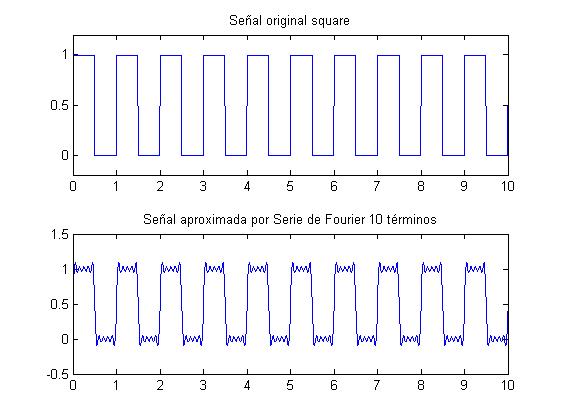
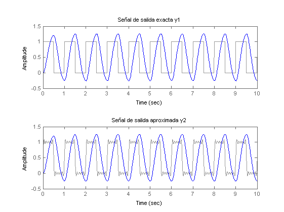

Contents
clear all;close all;clc
Comparación aproximación serie fourier, a un sistema lineal
Planta
num = [45];
den = [1 6 45];
Gs = tf(num,den);
Señales de entrada exacta y aproximada por Fourier
Amp = 0.5;
f = 1;
offset = 0.5;
t1 = 0:0.01:10;
u1 = Amp*square(2*pi*f*t1)+offset;
figure(1)
subplot(211)
plot(t1,u1)
axis([0 10 -0.2 1.2])
title('Señal original square')
T = 1;
syms t x;
a0=(1/T)*int(1,t,0,0.5);
u = a0;
for n=1:10
an=(2/T)*int(cos(2*pi*n*t/T),t,0,0.5);
bn=(2/T)*int(sin(2*pi*n*t/T),t,0,0.5);
u = u + an*cos((2*pi/T)*n*x) + bn*sin((2*pi/T)*n*x);
end
x=0:0.01:10;
u_x = subs(u,x);
subplot(212)
plot(x,u_x)
title(sprintf('Señal aproximada por Serie de Fourier %d términos',n));

Señales de salida exacta y aproximada por Fourier
y1 = lsim(Gs,u1,t1);
figure(2)
subplot(211)
lsim(Gs,u1,t1)
title('Señal de salida exacta y1')
y2 = lsim(Gs,u_x,x);
subplot(212)
lsim(Gs,u_x,x)
title('Señal de salida aproximada y2')
